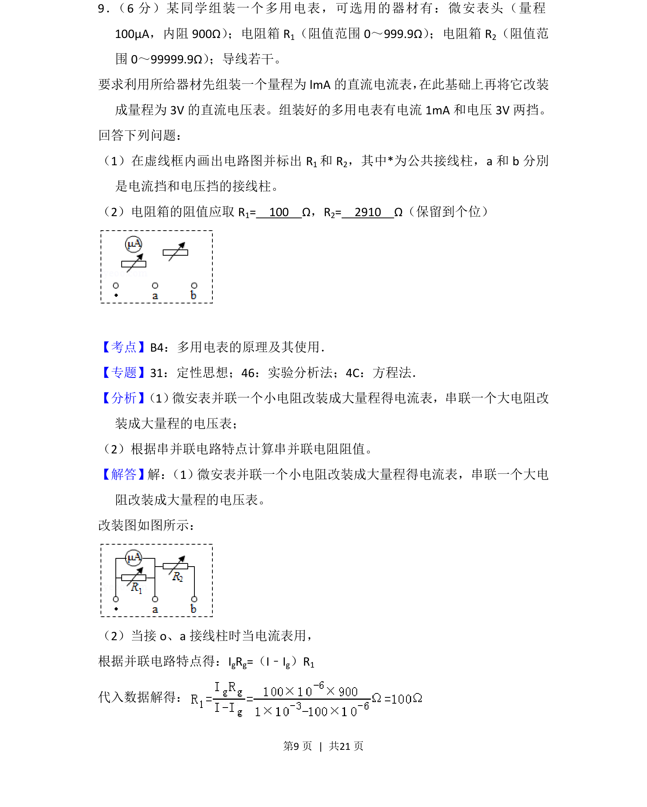
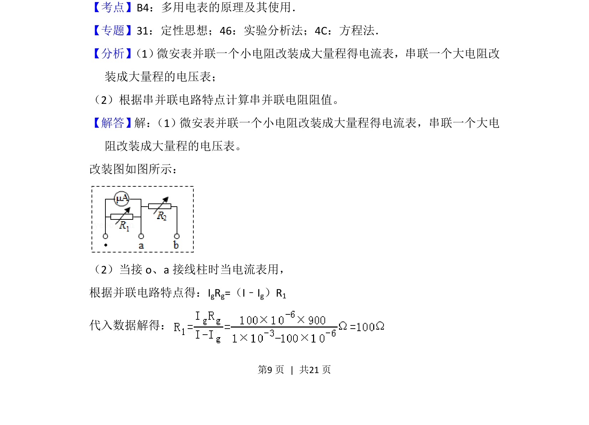
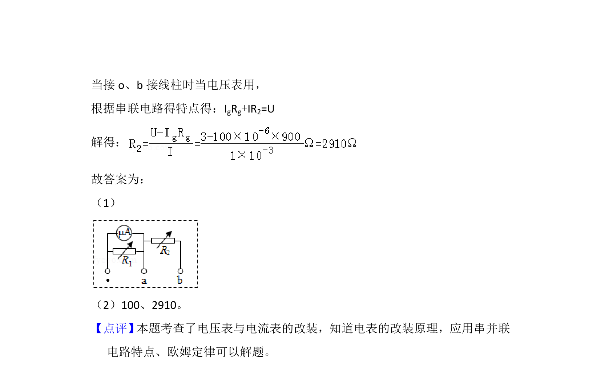

考点：电表改装 串并联电路 欧姆定律

本题要求设计多用电表的电流挡和电压挡电路，计算改装电阻值并画电路图。


📄 原 PDF 第 9 页：
素材/真题/吉林/2008-2024·（吉林）物理高考真题/2018年高考物理试卷（新课标Ⅱ）（解析卷）.pdf
9． （6分）某同学组装一个多用电表，可选用的器材有：微安表头（量程 100μA，内阻900Ω） ；电阻箱R1（阻值范围0～999.9Ω） ；电阻箱R2（阻值范 围0～99999.9Ω） ；导线若干。 要求利用所给器材先组装一个量程为lmA的直流电流表， 在此基础上再将它改装 成量程为3V的直流电压表。组装好的多用电表有电流1mA和电压3V两挡。 回答下列问题： （1）在虚线框内画出电路图并标出R 1和R 2，其中*为公共接线柱，a和b分別 是电流挡和电压挡的接线柱。 （2）电阻箱的阻值应取R 1= 100 Ω，R2= 2910 Ω（保留到个位）
【考点】B4：多用电表的原理及其使用．菁优网版权所有 【专题】31：定性思想；46：实验分析法；4C：方程法． 【分析】 （1） 微安表并联一个小电阻改装成大量程得电流表，串联一个大电阻改 装成大量程的电压表； （2）根据串并联电路特点计算串并联电阻阻值。 【解答】解： （1）微安表并联一个小电阻改装成大量程得电流表，串联一个大电 阻改装成大量程的电压表。 改装图如图所示： （2）当接o、a接线柱时当电流表用， 根据并联电路特点得：IgRg=（I﹣Ig）R1 代入数据解得：